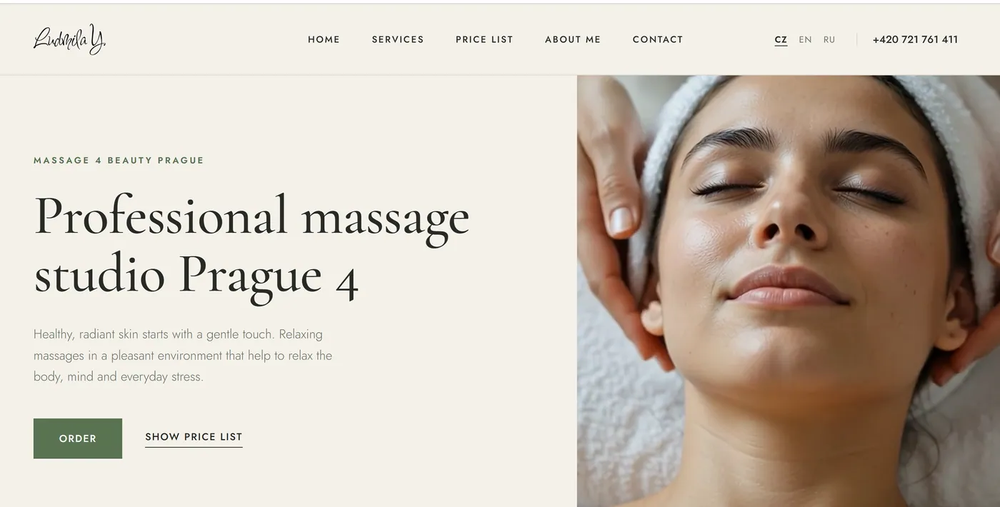

Одна спеціалістка, три мови, проти мереж.
Сертифікована масажистка з десятьма роками практики проти wellness-мереж, які переважають її бюджетом на кожному каналі. Сайт побудований навколо двох речей, яких мережа не скопіює.

З чого почалося
Кабінет однієї майстрині не виграє ціною, графіком чи рекламним бюджетом. У нього рівно дві переваги над мережею, і обидві зазвичай закопані внизу головної: глибина переліку технік і те, що кожну процедуру робить та сама пара рук.
Третій чинник у Празі 4 — мова. У Нусле велика чеська громада, велика російськомовна й міжнародна зверху. Це три окремі ринки з трьома окремими способами шукати той самий масаж.
Мережа продає процедуру. Спеціалістка продає причину записатися на цю процедуру саме до неї. Лише одне з цього переживає порівняння цін.
Підхід
Більшу частину роботи зробили два структурні рішення.
Перше — обличчя й тіло це різні бізнеси
Робота з обличчям тут незвично глибока: ритуал для обличчя, лімфодренаж, міофасціальний і ліфтинговий масаж, гуаша, трансбукальний масаж, альгінатна маска, масаж голови. Це драбина процедур, які бронюють повторно й шукають за назвою, часто як альтернативу процедурам у клініці естетичної медицини.
Роботу з тілом — спортивний, класичний, антицелюлітний, медовий, бамбуковими віниками, банки, рефлексологія, спина, аромамасаж, лімфодренаж — купують з інших причин і в іншому ритмі, часто одноразово, під конкретну скаргу.
Злиті в один список, обидва слабшають. Розділені, кожен стає знаходжуваним для тих, хто вже його шукає.
Друге — доказ це сама майстриня
Десять років практики й сертифікація — найсильніший сигнал довіри, який має цей кабінет, і єдине, чого мережа принципово не відтворить, бо мережа не пообіцяє вам, який саме працівник вас прийме. Тому людину не ховають на сторінці «про мене» для формальності: вона подана як причина, чому перелік технік узагалі викликає довіру.
Чехи, англомовні й російськомовні мешканці Праги 4 вживають різні слова для тієї самої процедури й зважують різне, коли обирають. Трансбукальний масаж, гуаша й лімфодренаж мають у цих трьох груп різний рівень упізнаваності. Кожна версія написана під свою аудиторію, а не пропущена через переклад поверх чеської.
Що було зроблено
- Сайт і структура SEO — процедури для обличчя й тіла розділені у власні знаходжувані структури.
- Тримовна версія — чеська, англійська й російська, кожна написана під те, як шукає ця аудиторія.
- Позиціонування майстрині — сертифікація й десятиліття практики як хребет сайту, а не як примітка.
- Локальний контент — сигнали Праги 4 і Нусле, щоб кабінет конкурував спершу у власному районі, а вже потім із містом.
- Прайс і подарункові сертифікати — зроблені як власні точки входу, бо і те, і те шукають напряму.
Працюючі шари
Результати
До публікації разом із періодом, який вони охоплюють: запити в топі за мовами, шляхи входу «обличчя проти тіла» і звернення за джерелом.
"[ ВІДГУК КЛІЄНТА — зібрати ]"
Що далі
Google Бізнес-профіль із належно опрацьованими трьома мовами, далі цикл відгуків: для однієї майстрині відгуки — найшвидший спосіб перетворити перевагу в довірі на щось, що вміють читати пошуковики. Потім аналітика в розрізі мов, бо ці три ринки майже напевно поводяться по-різному.
Конкуруєте з більшими бюджетами?
Спеціалісти перемагають мережі конкретикою. Це має бути вбудоване в структуру сайту, а не написане в текстах.